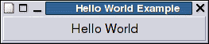
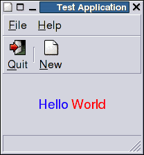

- Table of Contents
- 1. Introduction
- 2. Concepts
- 2.1. Percent String
- 2.2. Markup String
- 2.3. Colors
- 3. Commands
- 3.1. Non Widget Related Commands
- 3.2. Top Level Windows
- 3.3. Container
- box -- A widget which arranges its children horizontal or vertical.
- expander -- A container, which can hide its child widget.
- notebook -- A widget which allows to interactively select which of its children is visible.
- paned -- A widget which allows to interactively resize two children.
- scrolledWindow -- A window which adds scrollbars to its child.
- separator -- A widget which groups widgets horizontal or vertical.
- table -- A widget which arranges its children in rows and columns.
- 3.4. Buttons
- button -- A widget which executes a command when clicked.
- checkButton -- A widget which changes between two states when clicked.
- comboBox -- A widget with which one of several alternatives can be chosen.
- radioButton -- A widget from which only one of a group can be selected.
- 3.5. Entries
- entry -- A widget which allows the user to input a small amount of text.
- comboEntry -- A widget which allows to input a small amount of text.
- scale -- A slider widget for selecting a value from a range.
- spinButton -- A widget which allows the user to input a number.
- text -- A widget for multi line formatted text editing.
- 3.6. Display widgets
- label -- A widget which shows a small amount of text.
- image -- A widget which shows an image.
- progressBar -- A widget which gives the user feedback of background work.
- statusBar -- A widget which reports messages of minor importance to the user.
- 3.7. Menu widgets
- menuBar -- A menu container widget.
- menu -- A menu container widget.
- menuItem -- A menu item which executes a command when clicked.
- menuCheckItem -- A menu item which changes between two states when clicked.
- menuRadioItem -- A menu item from which only one of a group can be selected.
- menuSeparator -- A menu item which visually separates different items.
- 3.8. Toolbar widgets
- toolBar -- A toolbar container widget.
- toolBar item -- A button like item in a toolbar.
- toolBar checkItem -- A toolbar item which changes between two states when clicked.
- toolBar radioItem -- A toolbar item from which only one of a group can be selected.
- 3.9. Special Selectors
- colorButton -- A button to launch a color selection dialog.
- colorSelection -- A standard dialog to choose a color.
- fileChooser -- A standard dialog to choose a file
- fontButton -- A button to launch a font selection dialog.
- fontSelection -- A standard dialog to choose a font.
- 3.10. Tree and List Widgets
- 3.11. Misc. Widgets
- 3.12. Gnome Canvas Widget
- canvas -- A widget which displays graphic objects (in gnoclCanvas).
- canvas bPath -- A canvas item which consists of line and bezier segments. (in gnoclCanvas)
- canvas clipGroup -- A canvas item which implements clipping. (in gnoclCanvas)
- canvas ellipse -- A canvas ellipse item. (in gnoclCanvas)
- canvas image -- A canvas item which shows an image. (in gnoclCanvas)
- canvas line -- A canvas line item. (in gnoclCanvas)
- canvas polygon -- A canvas polygon item. (in gnoclCanvas)
- canvas rectangle -- A canvas rectangle item. (in gnoclCanvas)
- canvas richText -- A canvas rich text item. (in gnoclCanvas)
- canvas text -- A canvas text item. (in gnoclCanvas)
- canvas widget -- A canvas item which shows a normal widget. (in gnoclCanvas)
- 3.13. Gnome Gconf
- gconf -- Manipulate the Gnome GConf database.
- 3.14. Gnome VFS
- 3.15. Gnome
- appletFactory -- A command which creates a Gnome panel applet.
- session -- A command which implements an interface to the Gnome session manager.
- 3.16. Deprecated
- fileSelection -- A standard dialog to choose a file (DEPRECATED since GTK+ 2.4).
- combo -- A widget that allows the user to input a small amount of text. (DEPRECATED since GTK+ 2.4).
- optionMenu -- A widget with which one of several alternatives can be chosen. (DEPRECATED since GTK+ 2.4)
- A. License Terms
1. Introduction
Gnocl implements GTK+ and Gnome bindings for the programming language Tcl with emphasize on ease of use, following the example of Tk. It provides commands to build quickly GTK+ / Gnome compliant applications including the canvas widget, GConf and the Gnome applet. Gnocl is split in several libraries, which can be loaded on demand.
The newest version of Gnocl can be found at http://www.dr-baum.net/gnocl/.
Please send feedback, suggestions, bug reports to
<peter@dr-baum.net>.
The mandatory "Hello World" example looks like this:
#!/bin/sh
# the next line restarts using tclsh \
exec tclsh "$0" "$@"
package require Gnocl
set but [gnocl::button -text "Hello World" -onClicked {puts "Hello World"}]
gnocl::window -title "Hello World Example" -child $but
gnocl::mainLoop

A more complex example which produces a GUI like the following, is explained in more detail.

package require Gnocl
 set menu [gnocl::menu]
$menu add [gnocl::menuItem -text "%#New" -tooltip "Make new" \
set menu [gnocl::menu]
$menu add [gnocl::menuItem -text "%#New" -tooltip "Make new" \ -onClicked {puts "That's new"}]
-onClicked {puts "That's new"}]  $menu add [gnocl::menuSeparator]
$menu add [gnocl::menuItem -text "%#Quit" -onClicked exit \
-tooltip "Quit program"]
set file [gnocl::menuItem -text "%__File" -submenu $menu]
set menu [gnocl::menu]
$menu add [gnocl::menuItem -text "%__About" \
-tooltip "Show about dialog" \
-onClicked {puts "Mini example (c) 2001 P.G. Baum"}]
set help [gnocl::menuItem -text "%__Help" -submenu $menu]
set toolBar [gnocl::toolBar -style both]
$toolBar add item -text "%#Quit" -tooltip "Tooltip Quit" \
$menu add [gnocl::menuSeparator]
$menu add [gnocl::menuItem -text "%#Quit" -onClicked exit \
-tooltip "Quit program"]
set file [gnocl::menuItem -text "%__File" -submenu $menu]
set menu [gnocl::menu]
$menu add [gnocl::menuItem -text "%__About" \
-tooltip "Show about dialog" \
-onClicked {puts "Mini example (c) 2001 P.G. Baum"}]
set help [gnocl::menuItem -text "%__Help" -submenu $menu]
set toolBar [gnocl::toolBar -style both]
$toolBar add item -text "%#Quit" -tooltip "Tooltip Quit" \  -onClicked exit
-onClicked exit  $toolBar add space
$toolBar add item -text "%#New" -tooltip "Tooltip new" \
-onClicked {puts "That's new"}
set box [gnocl::box -orientation vertical -borderWidth 0 -spacing 0]
set win [gnocl::window -child $box -title "Test Application"]
$box add [gnocl::menuBar -children [list $file $help]]
$toolBar add space
$toolBar add item -text "%#New" -tooltip "Tooltip new" \
-onClicked {puts "That's new"}
set box [gnocl::box -orientation vertical -borderWidth 0 -spacing 0]
set win [gnocl::window -child $box -title "Test Application"]
$box add [gnocl::menuBar -children [list $file $help]]  $box add $toolBar
$box add [gnocl::label -text \
{%<<span foreground="blue" size="large">Hello</span>\
$box add $toolBar
$box add [gnocl::label -text \
{%<<span foreground="blue" size="large">Hello</span>\ <span foreground="red" size="large">World</span>}] -expand 1
$box add [gnocl::statusBar]
gnocl::mainLoop
<span foreground="red" size="large">World</span>}] -expand 1
$box add [gnocl::statusBar]
gnocl::mainLoop- Load the Gnocl package to be able to use the Gnocl commands.
- Create a menu to which different menu entries are added in the following lines.
- A standard New entry is created and added to the menu. The percent sign as first character of the test string gives, together with the next character, the string a special meaning (see Percent String). In this case "%#" means that "New" is used as stock item, which means that not only a standard text is used, but also if available the standard icon and a standard accelerator are added.
The string that follows the onClicked option is executed whenever the menu is clicked or its accelerator pressed.
- A toolBar is created similar to the menu above. With the -type option a syle with text and icons is used.
- A toolBar items is added to the toolBar. The syntax is similar to menu entries. Again a percent string is used to select a standard text and icon.
- To be visible each widget must be a direct or indirect ancestor of a top level widget. The standard top level widget is window.
- As main widget of the application a simple label is used. This one demonstrates another Percent String: the Markup String. It contains not only the text, but also the formatting of the text. This is very convenient and has huge advantages for internationalization of applications.

- Since Gnocl is event based the GTK main loop has to be called. This function never returns. From now on the GUI reacts on user input or other events like timers and the associated callback functions are called.